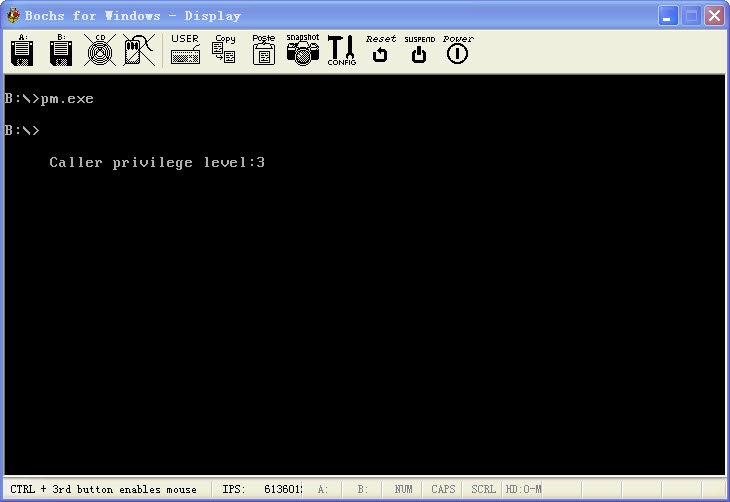

保护模式4:任务内特权级变换转移
文章目录
在上一篇我们说到利用call和jmp实现转移, 但是一直都是在0环下面.. 很显然一个现代的CPU是有多个特权级别的. 所以我们应该实验下在特权级之间的转换.
在Intel的CPU上, 任务可以有4个特权级, 每个特权级享有的权限是不一样的, 在同一任务内, 特权级转移一般是通过段间转移指令CALL, 通过调用门进行转移. 从内层转移到外层一般使用ret. 这里要注意不能使用Jmp指令实现特权级的转换.
当段间转移指令jmp 和段间调用指令CALL所含指针的选择子指示调用门描述符时, 就可以实现通过调用门的转移. 但是只有CALL指令可以实现变换到内层特权级, jmp指令不能实现任务内不同特权级的转换, 在执行通过任务门的段间转移指令jmp或段间调用指令call. 指令所含指令内的选择子用于确定调用门. 而偏移被丢弃, 把调用门内的48位全指针作为目标地址指针进行转移.
对于门描述符的访问采用访问数据段相同的规则. 调用门描述符的DPL规定了访问该门的最外层特权级. 只有在相同级或者更内层的特权级程序才能访问调用门. 既CPL <= 调用门的DPL.同时还要求指示门的选择子的RPL必须满足RPL <= 调用门的DPL, 然后还要检测目标描述符是否为代码描述符.调用门内的选择子指向的描述符必须为代码段描述符. 此外在装载代码段描述符高速缓冲寄存器之前调整代码段选择子的RPL=0, 既调用门中代码段的选择子的RPL被忽略.
在装载CS高速缓冲寄存器时, 还要对目标代码段描述符进行保护检测, 检测过程中的DPL不再是调用门的DPL, 而是调用门内选择子所指示的目标代码描述符的DPL, 这里jmp和CALL的检测还不太一样. 对于使用调用门的段间转移指令jmp, 检测条件与段间直接转移相同. 由于RPL=0, 所以可认为RPL <= DPL总是可以被满足, 所以对于普通的非一致代码段, 当CPL=DPL时, 发生无特权级转换, 对于一致代码段, 在满足CPL >= DPL时也发生无特权级变换的转移, 其他情况会异常. 对于CALL指令, 由于已置RPL=0, 所以可认为RPL <= DPL总是可以被满足对于一致代码段, 在满足CPL >= DPL时发生特权级转移, 对于非一致代码段, 当CPL=DPL时仍发生特权级转移. 当CPL>DPL时就发生了向内层特权级的转移. 将调用门中的选择子和偏移装入CS和指令指针EIP中. 并使CPL保持等于DPL, 同时切换堆栈.
说了那么多, 简单说就是CALL指令可以实现从外层特权级向内层转换, 而jmp只能够实现无特权转换. 用CALL指令在不同的特权级转换时, 还会切换堆栈.. 所以还要个TSS..
首先要实验转换特权级, 我们必须先到比较低的特权级上.. 比如3级或者1级什么的.. 这个是通过ret指令来实现的.. ret可以实现从特权级高的向特权级低的转移..
然后我们已经来到来3环, 然后通过调用门进入1环.打印下特权级. 调用门是个好东西. 然后通过调用门转移到0环的代码段, 再回到保护模式.
这个代码算是有点复杂了, 需要自己好生的揣摩. 有图有真相..
http://www.joenchen.com/JoenTools/Protect4.rar

;============================================================================ ;使用jmp, Call实现任务内特权级别变换实例(使用了LDT TSS) ;编译选项请参见 makefile TAB = 8 ;============================================================================ .686p Include pm.inc option casemap:none Stack_Len = 1024 ;堆栈大小 ;—————————————————————————- GdtSeg Segment ;GDT全局描述符 GDT label byte ;全局描述符表 Dummy: Descriptor 0, 0, 0 ;空的描述符 ;—————————————————————————- ;段基址 ;段界限 ;属性 Normal: Descriptor 0, 0ffffh, DA_DRW ;规范段描述符 g_Code16Desc: Descriptor 0, 0ffffh, DA_C ;非一致代码段16位 g_LdtTable: Descriptor 0, LdtLen-1, DA_LDT ;局部描述符表段的描述符 g_TssTable: Descriptor 0, TssSegLen-1, DA_386TSS ;386TSS描述符
GDTLen equ $ - GDT ;GDT长度 GDT_Ptr word GDTLen-1 ;VGDT dword 0 ;—————————————————————————- NormalSelector equ Normal - GDT ;规范段选择子 Code16Selector equ g_Code16Desc - GDT ;代码段选择子 g_LdtSelector equ g_LdtTable - GDT ;LDT段的选择子 g_TssSelector equ g_TssTable - GDT ;TSS段的选择子 ;—————————————————————————- _RegSp word ? ;用于保存SS:SP _RegSs word ? GdtSeg Ends ;============================================================================ LdtDataSeg Segment use16 ;局部描述符表 LDT label byte ;段基址 ;段界限 ;属性 L_Stack0Desc: Descriptor 0, Stack_Len -1, DA_DRW or DA_32 ;0级堆栈段32位 L_Stack1Desc: Descriptor 0, Stack_Len -1, DA_DRW or DA_32 or DA_DPL1 ;1级堆栈段32位 L_Stack3Desc: Descriptor 0, Stack_Len -1, DA_DRW or DA_32 or DA_DPL3 ;3级堆栈段16位 L_Code32Desc: Descriptor 0, L_Code32SegLen, DA_C or DA_32 ;非一致代码段32位 L_Code32DescDemo:Descriptor 0, L_Code32SegDemoLen, DA_C or DA_32 or DA_DPL3 ;非一致代码段32位3级 L_Code32DescShow:Descriptor 0, L_Code32ShowSegLen, DA_CR or DA_32 or DA_DPL1 ;非一致代码段32位1级 L_Data32Desc: Descriptor 0, 0ffffh, DA_DRW or DA_DPL3 ;数据段, 可读 L_VideoDesc: Descriptor 0b8000h, 0ffffh, DA_DRW or DA_DPL3 ;显存段(可读写)1级 ;—————————————————————————- L_Stack0Selector equ L_Stack0Desc - LDT + SA_TIL ;0级堆栈选择子 L_Stack1Selector equ L_Stack1Desc - LDT + SA_TIL or SA_RPL1 ;1级堆栈选择子 L_Stack3Selector equ L_Stack3Desc - LDT + SA_TIL or SA_RPL3 ;3级堆栈选择子 L_Code32Selector equ L_Code32Desc - LDT + SA_TIL ;LDT32位代码段 L_Code32Selector2 equ L_Code32DescDemo- LDT + SA_TIL or SA_RPL3 ;LDT32位代码段3级 L_Code32ShowSelector equ L_Code32DescShow- LDT + SA_TIL or SA_RPL3 ;LDT32位代码段3级RPL=3 L_DataSelector equ L_Data32Desc - LDT + SA_TIL or SA_RPL3 ;LDT数据段选择子 L_VideoSelector equ L_VideoDesc - LDT + SA_TIL or SA_RPL3 ;LDT视频段选择子 ;—————————————————————————- ;段选择子 入口 参数个数 属性 LCode32Gate: Gate L_Code32Selector, L32CodeSegEntry, 0, DA_386CGate ;386调用门 LCode32ShowGate: Gate L_Code32ShowSelector, L_Code32ShowMessage, 0, DA_386CGate + DA_DPL3 ;386调用门DPL=3 LCode32RetGate: Gate L_Code32Selector, L32CodeSegEnd, 0, DA_386CGate + DA_DPL3 ;386调用门DPL=3
T_LCode32Selector equ LCode32Gate - LDT + SA_TIL ;指向L_Code32Selector描述符的调用门 T_LCode32ShowSelector equ LCode32ShowGate - LDT + SA_TIL ;调用门—>L_Code32ShowSelector LCode32RetSelector equ LCode32RetGate - LDT + SA_TIL ;调用门—>L_Code32ShowSelector ;—————————————————————————- LdtLen = $ - LDT LdtCount = ( $ - LDT ) / 8 ;LDT描述符数量除以8是因为一个描述符8字节 ;—————————————————————————- LdtDataSeg Ends
;============================================================================ Stack0 Segment use32 ;0级堆栈 byte Stack_Len dup (0) Stack0 Ends
Stack1 Segment use32 ;2级堆栈 byte Stack_Len dup (0) Stack1 Ends
Stack3 Segment use32 ;2级堆栈 byte Stack_Len dup (0) Stack3 Ends ;============================================================================ ;LDT的32位数据段 L32DataSeg Segment SzMessage byte "Caller privilege level:", 0 dwCpl dword 0 L32DataSeg Ends ;============================================================================ ;局部描述符中的32位代码段 ;============================================================================ L32CodeShowSeg Segment use32
;============================================================================ ;显示一条信息_lpStr:字符串首地址 ;_dwXY开始显示地址 ;============================================================================ _PrintMessage Proc uses esi edi _lpStr:dword, _dwXY:dword
mov esi, \_lpStr
xor ecx, ecx
;—————————————————————————- @@: mov al, byte ptr ds:[esi] inc esi inc ecx or al, al jnz @b ;ecx == 字符串长度 dec ecx ;—————————————————————————- mov esi, _lpStr mov edi, _dwXY @@: lodsb mov ah, 07h ;属性 stosw loop @b ret _PrintMessage Endp ;============================================================================ L_Code32ShowMessage equ $- L32CodeShowSeg ;定义入口 ShowMessage Proc ;1环段
push ebp
mov ebp, esp
mov ax, L\_DataSelector ;3环数据段
mov ds, ax
mov ax, L\_VideoSelector ;3环视频段
mov es, ax
;—————————————————————————- ;打印CPL mov eax, 5 * 80 * 2 + 5 * 2 ;5行5列 Invoke _PrintMessage, offset SzMessage, eax
mov eax, \[ebp+8\]
and al, 011b
add al, '0'
mov ebx, offset dwCpl
mov dword ptr ds:\[ebx\], 0
mov byte ptr ds:\[ebx\], al
;将特权级写入缓冲区并打印
mov eax, 5 \* 80 \* 2 + 28 \* 2 ;5行20列
Invoke \_PrintMessage, ebx, eax
;—————————————————————————- mov esp, ebp pop ebp retf ;从1级返回3级 ShowMessage Endp L_Code32ShowSegLen equ $ - L32CodeShowSeg L32CodeShowSeg Ends ;============================================================================ ;局部描述符中的32位代码段演示段. 3环 ;============================================================================ L32CodeDemoSeg Segment use32 CodeSeg2Entry Proc ;由ret返回到的3级
;通过调用门进入1级, 显示当前的特权级,
;虽然描述的代码是1级, 但是CPL却是3级
CALL32 T\_LCode32ShowSelector, 0
;转到过渡代码段, 切换到0环
CALL32 LCode32RetSelector, 0
;
CodeSeg2Entry Endp
L_Code32SegDemoLen equ $ - L32CodeDemoSeg L32CodeDemoSeg Ends ;============================================================================ ;局部描述符中的32位过渡段, 从这里进入3环 ;============================================================================ L32CodeSeg Segment use32
L32CodeSegEntry equ $ - L32CodeSeg ;入口 TssCodeBegin Proc far ;通过调用门转移过来
mov ax, L\_Stack0Selector
mov ss, ax
mov esp, Stack\_Len ;建立0级SS:ESP
push dword ptr L\_Stack3Selector ;3级堆栈选择子
push dword ptr Stack\_Len ;3级堆栈SP
push dword ptr L\_Code32Selector2 ;压人入口点选择子
push offset CodeSeg2Entry ;入口偏移
retf ;这句话从0环返回3环
TssCodeBegin Endp ;—————————————————————————- L32CodeSegEnd equ $ - L32CodeSeg ;出口 TssCodeEnd Proc far
Jmp32 Code16Selector, <offset \_LdtRet>
TssCodeEnd Endp
L_Code32SegLen equ $ - L32CodeSeg ;长度 L32CodeSeg Ends ;============================================================================ ;任务状态段TSS ;============================================================================ TssSeg Segment
regLink word 0 ;链接字段
word 0
regEsp0 dword Stack\_Len ;0环使用esp
regSs0 word L\_Stack0Selector;0环使用SS
word 0
regEsp1 dword Stack\_Len ;1环使用esp
regSs1 word L\_Stack1Selector;1环使用SS
word 0
regEsp2 dword 0 ;2环使用esp
regSs2 word 0 ;2环使用SS
word 0
regCr3 dword 0 ;CR3寄存器
regEip dword 0 ;EIP
regEflags dword 0 ;Eflags
regEax dword 0 ;eax
regEcx dword 0 ;ecx
regEdx dword 0 ;edx
regEbx dword 0 ;ebx
regEsp dword 0 ;esp
regEbp dword 0 ;ebp
regEsi dword 0 ;esi
regEdi dword 0 ;eei
regEs word 0 ;Es
word 0
regCs word 0 ;Cs
word 0
regSs word 0 ;SS
word 0
regDs word 0 ;DS
word 0
regFs word 0 ;FS
word 0
regGs word 0 ;GS
word 0
regLdtr word g\_LdtSelector ;LDTR
word 0
regTrip word 0 ;调试陷阱
regIOMap word IOMAP\_Offset ;指向I/0许可位图区域的段内偏移
IOMAP_Offset equ $ - TssSeg ;IO许可位图偏移 byte 0ffh TssSegLen equ $ - TssSeg TssSeg Ends ;============================================================================ ;16位段, 由实模式跳入 ;============================================================================ g_Code16Seg Segment use16
_Entry: ;—————————————————————————- mov ax, g_TssSelector ltr ax ;装载TR
mov ax, g\_LdtSelector
lldt ax ;装在LDT
Jmp16 T\_LCode32Selector, 0 ;通过调用门转过渡段
;—————————————————————————- ;准备退回实模式 _LdtRet:mov ax, NormalSelector mov fs, ax ;规范选择子 mov es, ax mov ds, ax mov ss, ax
mov eax, cr0 ;关PE位, 进入实模式
and al, 0feh
mov cr0, eax
;刷新段选择子缓冲区, 退回实模式
Jmp16 <seg StartCode >, < offset \_RetProtect >
g_Code16Seg Ends
StartCode Segment use16
_InitGdt Proc uses es ;初始化全局描述符表
xor eax, eax
mov ax, GdtSeg
mov es, ax ;es-->全局描述符表
;—————————————————————————- shl eax, 4 add eax, offset GDT mov dword ptr es:[GDT_Ptr+2], eax ;初始化VGDT描述符 ;—————————————————————————- mov ax, g_Code16Seg ;初始化十六位的代码段 shl eax, 4 mov word ptr es:[g_Code16Desc+2], ax ;段基址低位 shr eax, 16 mov byte ptr es:[g_Code16Desc+4], al ;段基址高地址低位 mov byte ptr es:[g_Code16Desc+7], ah ;段基址高地址高位 ;—————————————————————————- mov ax, LdtDataSeg ;初始化LDT描述符 shl eax, 4 mov word ptr es:[g_LdtTable+2], ax ;段基址低位 shr eax, 16 mov byte ptr es:[g_LdtTable+4], al ;段基址高地址低位 mov byte ptr es:[g_LdtTable+7], ah ;段基址高地址高位 ;—————————————————————————- mov ax, TssSeg ;初始化TSS描述符 shl eax, 4 mov word ptr es:[g_TssTable+2], ax ;段基址低位 shr eax, 16 mov byte ptr es:[g_TssTable+4], al ;段基址高地址低位 mov byte ptr es:[g_TssTable+7], ah ;段基址高地址高位 ;—————————————————————————- lgdt fword ptr es:[GDT_Ptr] ;装载GDT ret _InitGdt Endp ;============================================================================ _InitLdt Proc uses es ;初始化局部描述符表
xor eax, eax
mov ax, LdtDataSeg ;es-->局部描述符表
mov es, ax
;—————————————————————————- mov ax, Stack0 ;初始化LGT中的0环堆栈32位 shl eax, 4 mov word ptr es:[L_Stack0Desc+2], ax ;段基址的低地址 shr eax, 16 mov byte ptr es:[L_Stack0Desc+4], al ;段基址高地址低位 mov byte ptr es:[L_Stack0Desc+7], ah ;段基址的高地址高位 ;—————————————————————————- mov ax, Stack1 ;初始化LGT中的1环32位堆栈 shl eax, 4 mov word ptr es:[L_Stack1Desc+2], ax shr eax, 16 mov byte ptr es:[L_Stack1Desc+4], al mov byte ptr es:[L_Stack1Desc+7], ah ;—————————————————————————- mov ax, Stack3 ;初始化LGT中的3环32位堆栈 shl eax, 4 mov word ptr es:[L_Stack3Desc+2], ax shr eax, 16 mov byte ptr es:[L_Stack3Desc+4], al mov byte ptr es:[L_Stack3Desc+7], ah
;—————————————————————————- mov ax, L32CodeShowSeg ;初始化LGD的显示信息段 shl eax, 4 mov word ptr es:[L_Code32DescShow+2], ax shr eax, 16 mov byte ptr es:[L_Code32DescShow+4], al mov byte ptr es:[L_Code32DescShow+7], ah ;—————————————————————————- mov ax, L32CodeSeg ;初始化LGT中的32位代码段 shl eax, 4 mov word ptr es:[L_Code32Desc+2], ax shr eax, 16 mov byte ptr es:[L_Code32Desc+4], al mov byte ptr es:[L_Code32Desc+7], ah ;—————————————————————————- mov ax, L32CodeDemoSeg ;初始化LGT中的32位代码段3环那个 shl eax, 4 mov word ptr es:[L_Code32DescDemo+2], ax shr eax, 16 mov byte ptr es:[L_Code32DescDemo+4], al mov byte ptr es:[L_Code32DescDemo+7], ah ;—————————————————————————- mov ax, L32DataSeg ;初始化LGT中的32位数据段 shl eax, 4 mov word ptr es:[L_Data32Desc+2], ax shr eax, 16 mov byte ptr es:[L_Data32Desc+4], al mov byte ptr es:[L_Data32Desc+7], ah ;—————————————————————————- ret _InitLdt Endp ;—————————————————————————- Jmain Proc
call \_InitGdt ;初始化全局描述符表
call \_InitLdt ;初始化局部描述符表
;—————————————————————————- mov ax, GdtSeg mov ds, ax
push ss
pop ds:\[\_RegSs\]
push sp
pop ds:\[\_RegSp\] ;保存SS:SP
cli
\_EnableA20 ;关中断开A20地址线
mov eax, cr0
or eax, 1
mov cr0, eax ;开启分段, 进入保护模式
;—————————————————————————- Jmp16 Code16Selector, <offset _Entry> ;跳入保护模式
_RetProtect:: ;退回保护模式 ;—————————————————————————- mov ax, GdtSeg mov ds, ax mov ax, ds:[ _RegSs ] ;恢复SS:SP mov ss, ax mov ax, ds:[ _RegSp ] mov sp, ax
\_DisableA20 ;关A20地址线, 开中断
sti
mov ax, 4c00h
int 21h
Jmain Endp StartCode Ends ;—————————————————————————- End Jmain
文章作者 忆杰
上次更新 2011-09-16